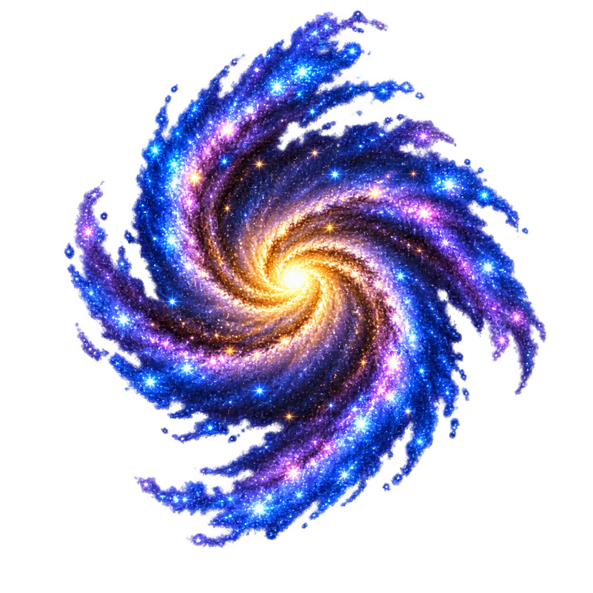
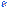
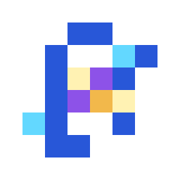

A · Golden-Core Mini Spiral
recommended

actual 8x8 · neutralactual 8x8 · Galactic dark

색/형태: gold core + cyan/violet 2-arm S spiral.
장점: Planetary 128 identity와 가장 faithful, 핵/팔 구분이 빠름.
단점: B보다 회전량은 작음. 8px PASS · 18px · 5 colors · 1 component.